Full 2π phase and high transmission cannot coexist at wide angles. We restrict the lens to 0–π, keeping only meta-atoms that stay bright at every angle, and learn it with angle-aware optimization that models each meta-atom's angle-dependent response. The result is bright, sharp imaging across 100°.
Full abstract
Wide–field-of-view (FoV) near-infrared (NIR) imaging is vital for compact augmented reality and robotic systems. Conventional wide-FoV optics rely on bulky compound refractive optics, limiting miniaturization. Metalenses composed of sub-wavelength meta-atoms offer a compact alternative. However, achieving high transmission and complete 2π phase coverage simultaneously over wide angle-of-incidence (AOI) remains challenging, leading to blur and non-uniform efficiency across the field. Here, we present a learned π metalens based on an AOI-aware design framework that achieves uniform-quality 100° FoV NIR imaging. Rather than enforcing full 2π phase control, we leverage meta-atoms that maintain high-transmission across wide angular ranges, which inherently exhibit restricted phase coverage. To design such a phase-limited metalens, we introduce a differentiable phase-limited metalens representation that incorporates the AOI-aware vectorial response of meta-atoms. This effectively learns a metalens using phase-limited high-transmission meta-atoms, yielding improvements in focusing efficiency and image sharpness across a wide FoV. Our learned π metalens demonstrates a 14% improvement in modulation transfer function at the largest AOI and a 2.4× enhancement in focusing-efficiency uniformity compared to conventional quadratic 2π metalenses. Our results suggest that, when AOI-dependent responses are properly modeled, complete 2π phase coverage is not strictly required for high-performance wide-FoV metalenses, opening new opportunities for compact NIR imaging systems in robotics, human-computer interaction, and eye-tracking in extended reality systems.
Why π?
Look at each meta-atom. Click through the three steps.
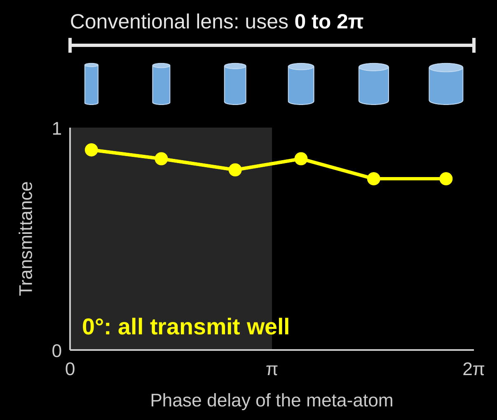
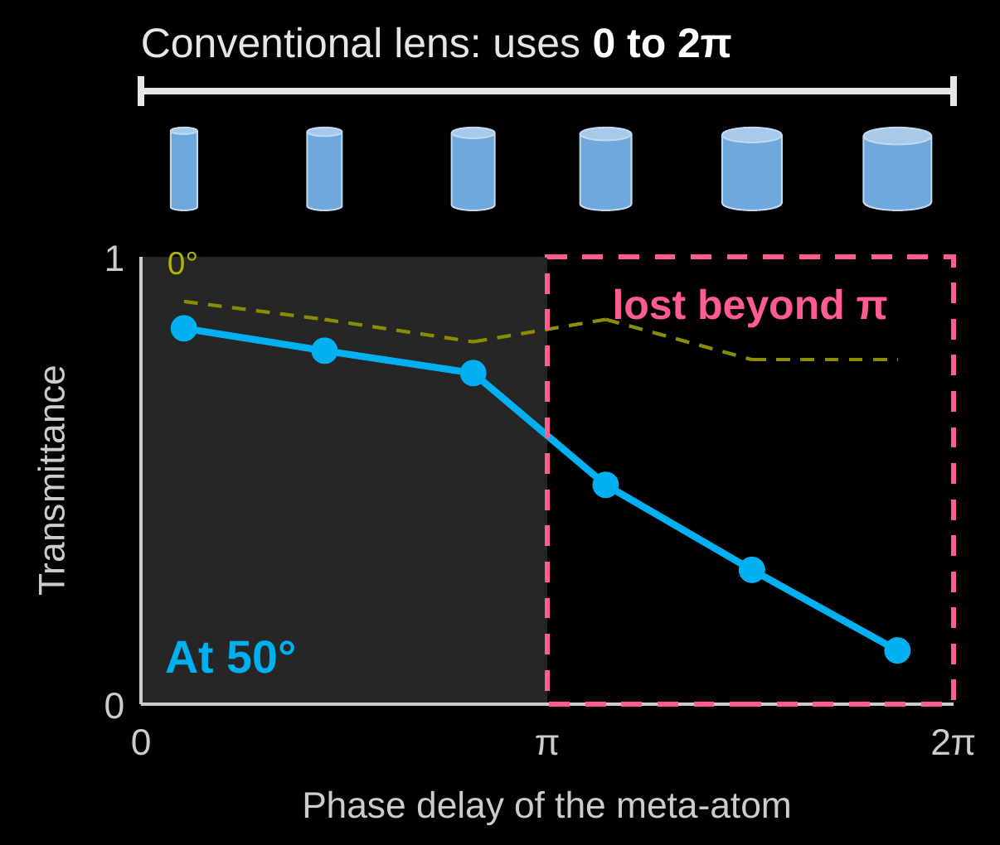
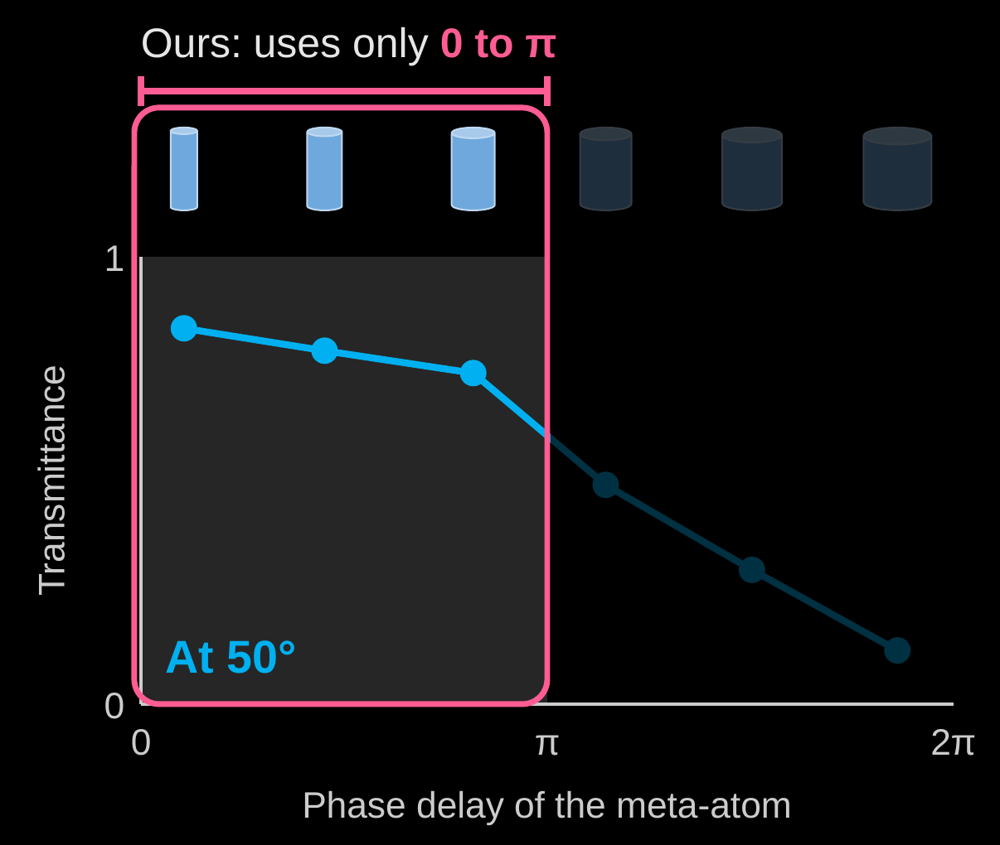
Angle-aware lens optimization
A 0–π lens phase is simulated with pre-computed meta-atom responses at every angle, and the loss against ground truth updates the lens end-to-end.
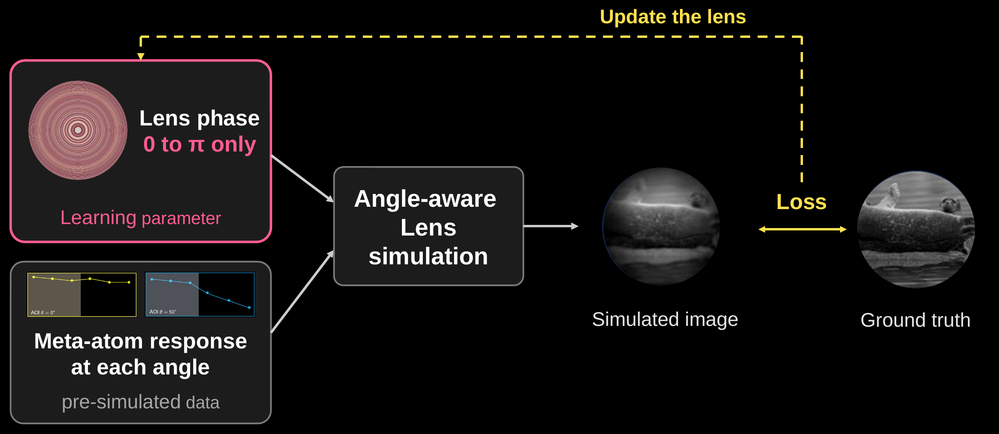
Details: walk through the paper figures step by step
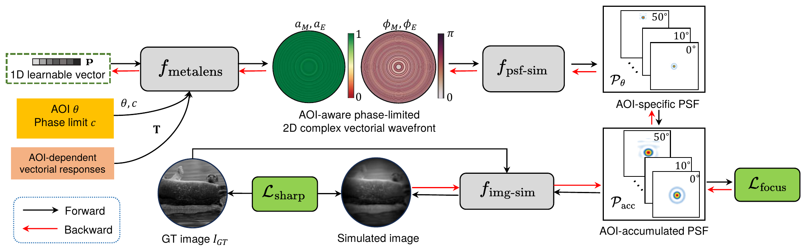
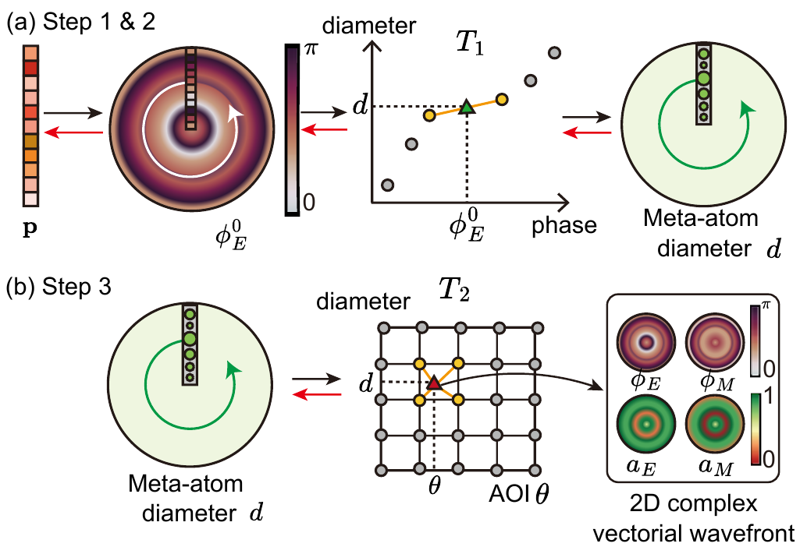
Experimental system
A fabricated a-Si:H metalens with 580 nm-tall nano-pillars, imaged under 850 nm illumination.
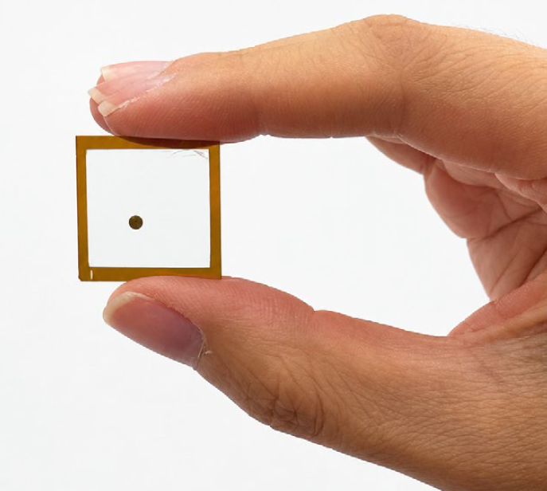
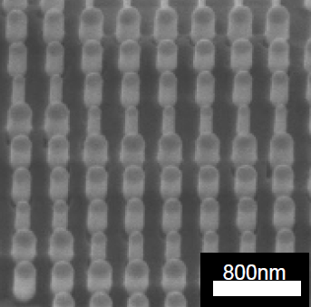
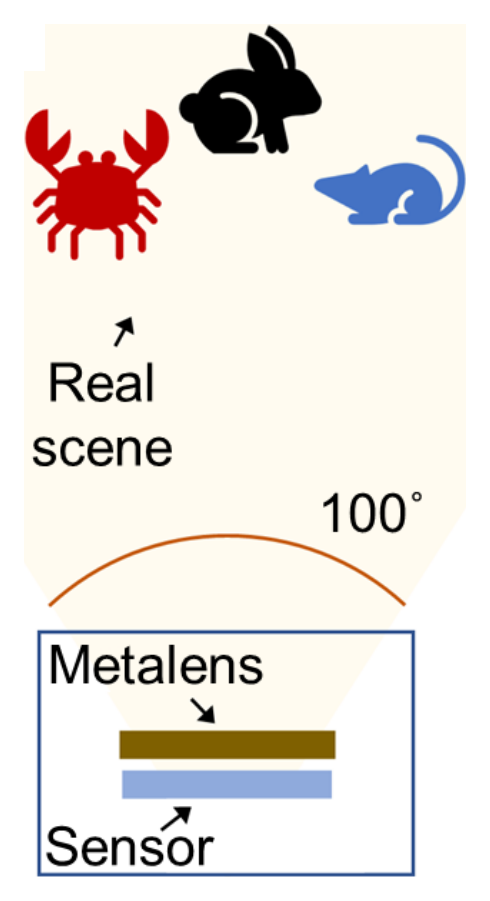
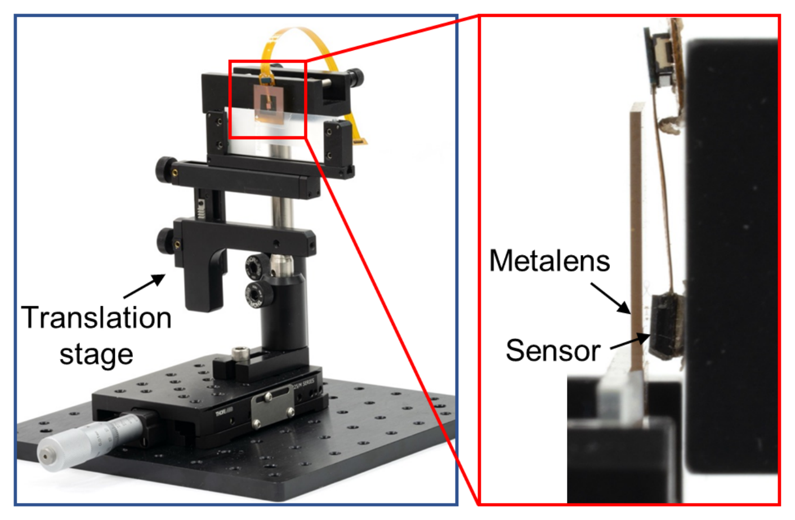
Uniform efficiency, sharper edges
One raw capture covers the full 100° FoV. Compared with a quadratic 2π metalens, efficiency stays flat across angles and the edge MTF improves.
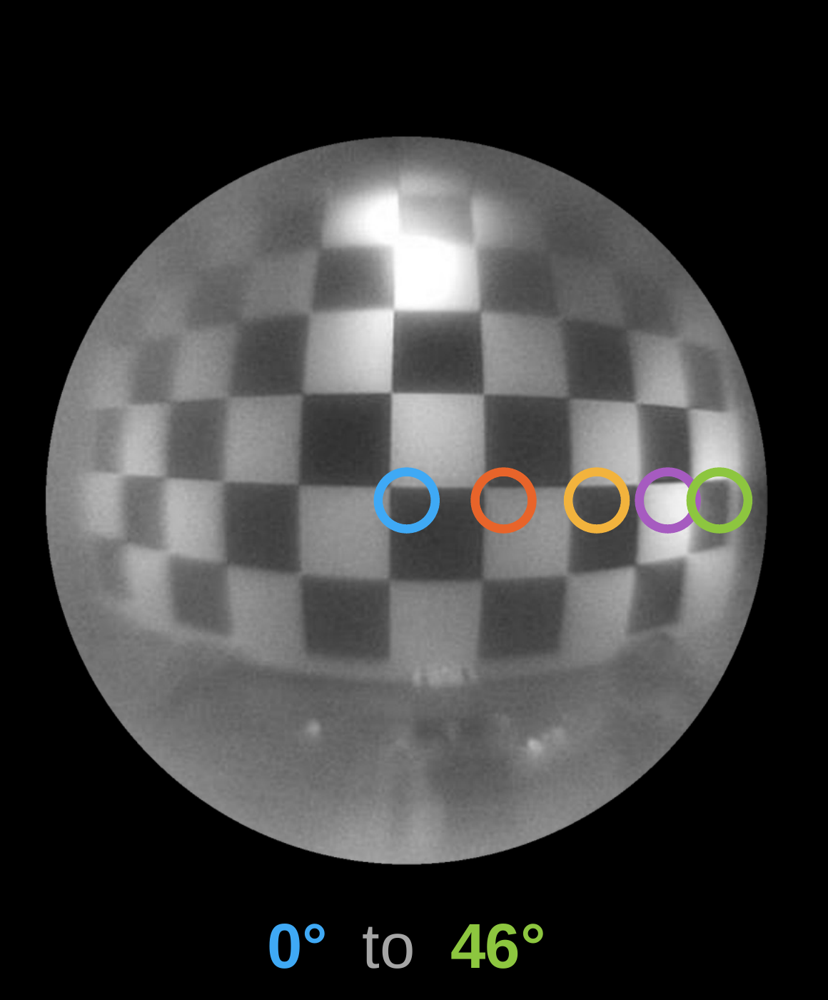
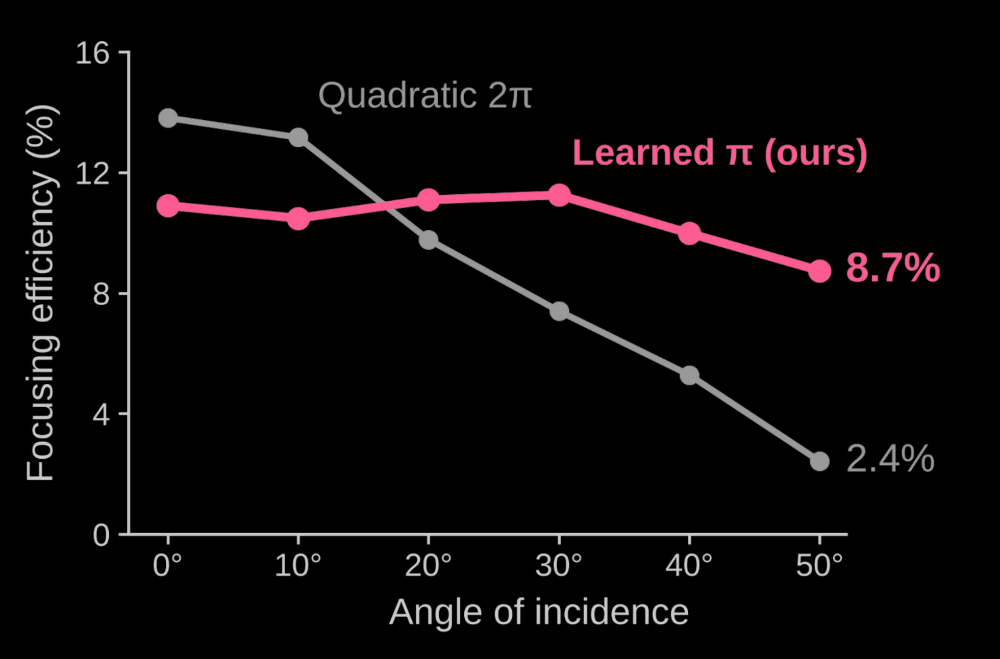
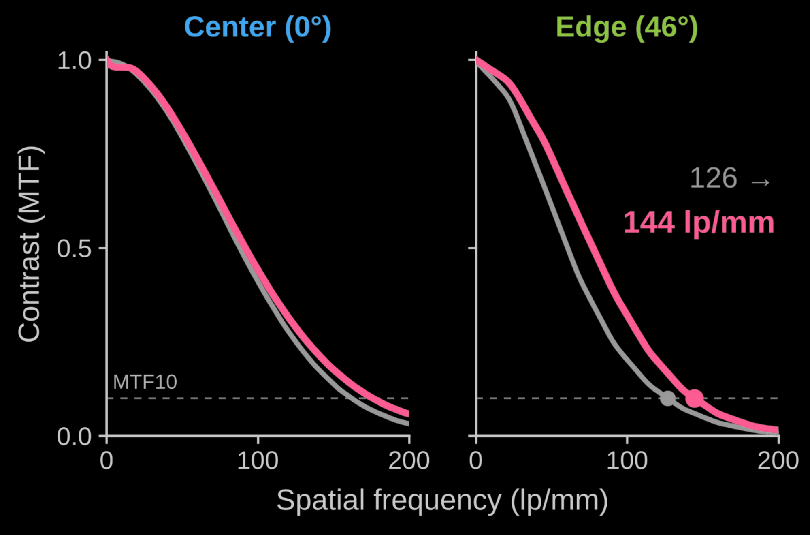
Details preserved at large angles
Zoomed into the same peripheral region: the checkerboard stays resolved with ours and washes out with the quadratic lens.
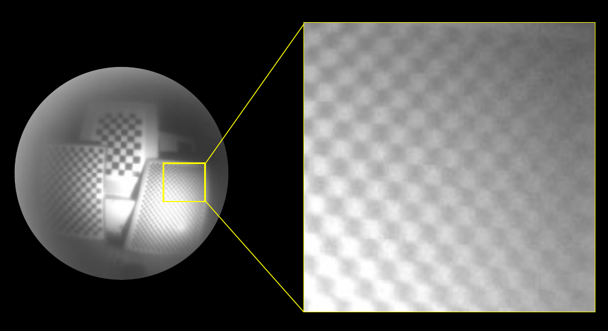
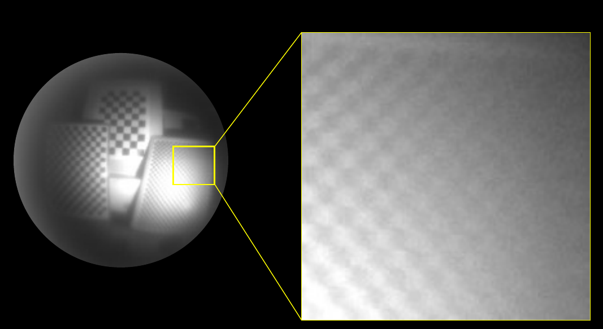
Compact eye tracking
The metalens sits directly on the sensor, 0.8 mm apart. Pupil boundaries stay sharp even at 50°.
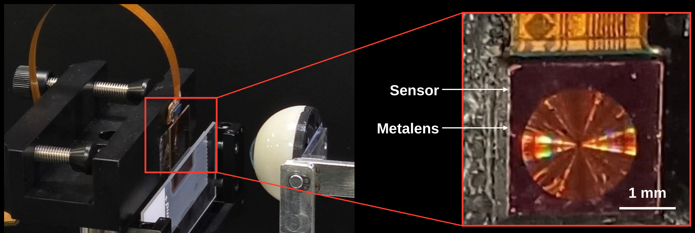
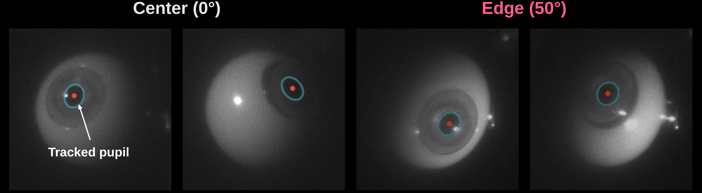